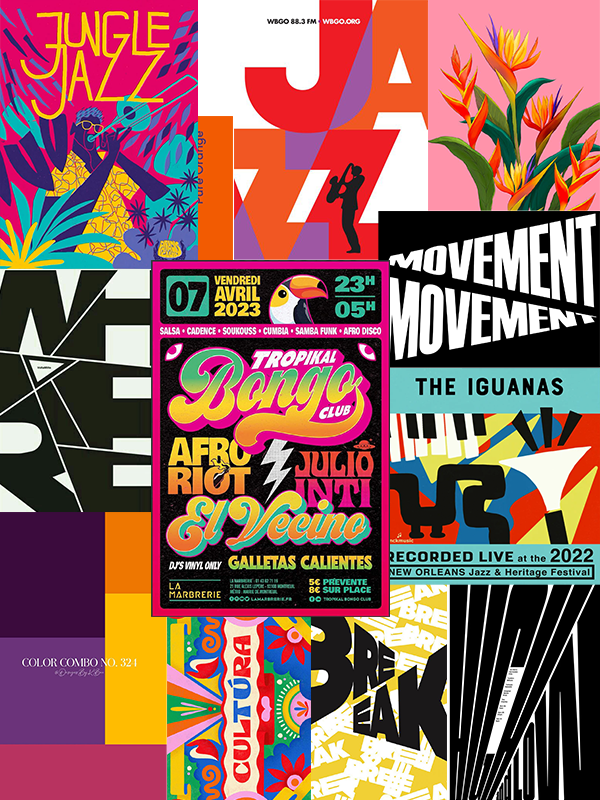
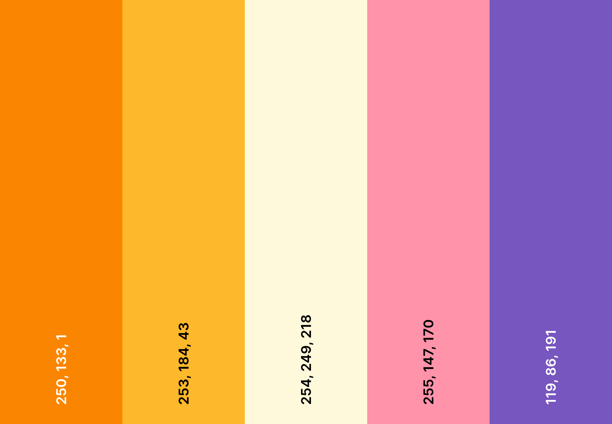

objective
Objective
Communicate the warmth and vibrancy of Latin culture while maintaining classic jazz sophistication for the Dublin Jazz Festival's 50th anniversary, featuring Rubén Blades.
research
Research
Analyzed jazz vs. Latin Jazz visual language: vintage elegance vs. vibrant energy.
{kind=link}

Key findings:
- Jazz: Vintage style, warm colors, saxophone motifs, flowing lines
- Latin Jazz: High contrast, vibrant palettes, congas + trumpets, rhythmic shapes
- Instruments: Trumpet (universal jazz) + congas (Latin distinction)
typography
Typography choices
- GC Dinko (Primary): Expressive for the main info, event and artist name
- Gadugi (Secondary): Bold, geometric and readable for event info
- Distorted "Latin Jazz" background text adds rhythm without overwhelming readability
color system
Color system
Warm, vibrant palette evoking celebration:
{kind=link}

- Orange: Enthusiasm, vitality, energy
- Yellow: Happiness, optimism, attention
- Cream: Warmth, readability
- Pink: Joyfulness, vibrancy
- Purple: Sophistication, creativity
key learnings
Key learnings
- Typography constraints sharpen creative problem-solving
- Color psychology powerfully evokes cultural identity
- Hierarchy, grid systems, and negative space maintain clarity in compositions